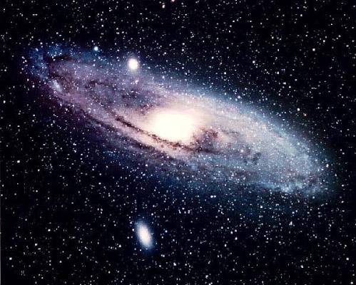

Удивительное рядом
Интересные факты
- Скорость света в вакууме – 299 792 458 м/с .
- Масса Солнца составляет 99,86% массы всей Солнечной системы.
- Атомы в нашем теле были созданы в недрах звёзд.
- Один день на Венере длиннее одного года на Венере.
- Гравитация искривляет пространство и время.
Планеты Солнечной системы
| Планета | Диаметр (км) | Расстояние от Солнца (млн км) | Спутники |
|---|---|---|---|
| Меркурий | 4 879 | 57,9 | 0 |
| Венера | 12 104 | 108,2 | 0 |
| Земля | 12 742 | 149,6 | 1 |
| Марс | 6 779 | 227,9 | 2 |
| Юпитер | 139 820 | 778,5 | 95 |
| Сатурн | 116 460 | 1 433,5 | 146 |
| Уран | 50 724 | 2 872,5 | 27 |
| Нептун | 49 244 | 4 495,1 | 14 |
Подробнее о планетах – на сайте NASA .
